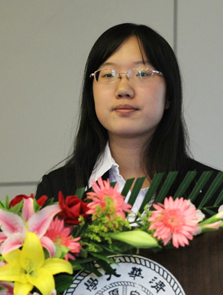

我来自山东省泰安市，高中毕业于山东泰安第二中学。三年前，怀着对这培养出无数学术大师、兴业之士、治国之才的学府的仰望和憧憬，我来到了这里，带着一份稚嫩而模糊的梦想：我要成为一名对社会有用的人，奉献自己的才华与汗水服务于人民。回首三年走过的路，我能清晰地感受到自己的成长：在服务同学的过程中我体验到了与集体共同成长的温暖动力，在参与学术研究的路上我发现了激发自己永远向前的兴趣和理想。
从学委到团支书、党课小组组长，与班集体共同成长
大一入学，我担任了班里的学习委员。从繁杂而普通的课代表征集、协调选课等常规工作，到联系老师为班内同学增加答疑时间、组建有互补性的学习小组等从班级特点着想主动发起的工作，我认真负责、细心耐心的工作精神获得了同学们的一致好评。在大三这学习、社工和科研压力最重的一年，我在担任医学院学生科协主席的同时，担任了生医九班的团支部书记。男生节联欢上集体游戏的欢乐的感动，以人生规划为主题结合实践、循序渐进的两次主题团日带给大家的收获，既让生医九这个集体更加团结进步，也促使我在沟通交流、组织协作、集体建设等方面有了更深刻的思考和更丰富的感悟。本学年，我担任了班里的党课学习小组组长，希望自己在思想上能够继续与这个家庭一般的集体共同成长。
医学院学生科协，为营造更好的科创氛围和条件而奋斗
大一上学期，我加入了医学院学生科协。亲身参与到科创讲座、挑战杯、医设等活动和赛事的组织之中，我感受到了科创活动的魅力，也感受到了生医领域对人类健康的深远意义与它广阔的发展前景。可以说，科协的工作让我在大一就迅速地对本专业各研究方向有了初步了解、对参与实验室科研跃跃欲试；同时，我也期待，通过自己在科创方面的工作，增进更多的同学对生物医学工程的理解，营造更好的学生学术科技氛围和环境。于是，从大一直到大四，我仍然“奋战”在医学院学生科协工作的“前线”。不同的是，从干事到主席，我不仅仅着眼于一个个活动的细节，更学会了有高度地统筹规划组织的工作，不拘泥于常规而是从不同受众的需求出发来思考工作。2009-2012，三届医设大赛、《视野》期刊、多期学业生涯规划讲座与论坛、挑战杯参赛与科展、实验室开放日等工作中都有我的身影，医设在全校的影响力逐步扩大，医学院本科生科创氛围越来越浓郁，挑战杯成绩稳步提高，我也感受到将心比心的付出带给人的欣慰。2011年5月我被评为“清华大学学生科协优秀学生干部”，2012年5月获得清华大学医学院“学生社会工作服务金质勋章”。
热爱科研，投入到磁共振成像领域的探索之中
学业上我一直严格要求自己，每年总成绩排名均为院系第一。全部数学、物理课程的平均分为97.6，多门专业课程成绩为全体选课同学的第一名，包括微积分、大学物理、电路原理、微机原理与应用等。由于兴趣，我大三提前选修了两门研究生课程磁共振成像原理和数字信号处理，均获得最高分。
大二年级我进入刚刚成立的清华大学生物医学影像研究中心，对医学影像特别是磁共振成像领域有了更深刻的了解。我发现从临床上得到不同部位、不同参数对比度的影像，到科学研究中探索人的思维、代谢等诸多奥秘，磁共振成像这一已经被广泛应用的成像模式竟有着更广泛的研究范围和更强大的尚未被发现或利用的潜力。所以这个领域一直深深吸引着我。大二下学期开始，我在影像中心郭华老师的指导下，积极参与“基于化学位移的MRI水脂分离成像研究”项目，不但顺利通过星火五期的选拔，还在当年的国际医学磁共振学会年会投稿3篇会议摘要（分别作为第一、第二、第三作者），全部被会议录用。大三下学期，我在应葵老师的指导下，开始进行磁共振温度成像的研究，与304医院合作将磁共振成像应用于微波脊柱肿瘤热消融的实时温度监控之中，并且作为立项人申请了国家大学生创新实验室计划项目《用于肿瘤热疗的磁共振实时温度成像技术》。
我没有将自己的科研局限于特殊应用的图像后重建方法，而是争取机会参与成像序列研究。虽然这要求很高的磁共振成像物理基础和实际经验积累，对本科生来说非常挑战，但通过一年多的研究我认识到只有控制成像过程才能更灵活的满足各种实际应用的需要。大三暑假，我在“清华-约翰霍普金斯大学生物医学工程联合研究中心本科生暑期交流项目”的支持下，赴约翰霍普金斯大学（全美生物医学工程排名第1，医学院排名第2）进行为期8周的实验室科研，完成项目《Black-blood Cardiac Imaging with Phase SensitiveInversion Recovery(基于相位敏感翻转恢复技术的黑血心脏磁共振序列)》。我不仅完成了对这种应用新的压血原理的序列的仿真，并且参与了多次动物实验，初步验证了这个序列的可行性和优势。我的工作获得实验室导师的赞许，将继续合作进行下一阶段的实验并将结果整理发表。
感谢清华，感谢所有陪伴我一起走过的老师和同学们，让我越来越坚定地践行责任与奉献的信仰，也让我曾经模糊的梦想越来越清晰：我会在医学影像研究的道路上继续求索，努力前进，争取早日实现科技报国的人生目标。